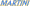

| Circuit | Date | Winner | ||
| Dijon | 30 March | #68 - M.Krisam Jr. (Scuderia München - Osella PA20-BMW) | ||
| Varano | 4 May | #68 - M.Krisam Jr. (Scuderia München - Osella PA20-BMW) | ||
| Hockenheim | 7 July | #63 - H.Steiner (Equipe Bernoise - Martini Mk 77-BMW) |  | |
| A1-Ring | 3 August | #1 - M.Krisam Jr. (Scuderia München - Osella PA20-BMW) | ||
| Brno | 14 September | #20 - A.Merzario (Symbol Team - Centenari) | ||
| Hockenheim | 8 November | #41 - H.Fischer (Renngemeinschaft Allgäu - PRC-Mugen) | ||